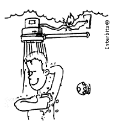

🔹 Ir para Problema 80 | 🔹 Ir para Problema 82
118. (ENEM 2ª aplicação 2010)
Um chuveiro elétrico foi instalado em uma rede de 110 V, com três posições de potência: verão 2100 W, meia estação 2400 W e inverno 3200 W. Para garantir a proteção da instalação, deve-se usar um disjuntor que interrompa a corrente quando o valor ultrapassar o necessário. Qual deve ser o valor mínimo desse disjuntor?

1) A corrente máxima ocorre na posição:
2) A potência nessa posição é:
3) Corrente calculada por I = P/V:
4) O disjuntor mínimo adequado é:
Assinale a alternativa correta: